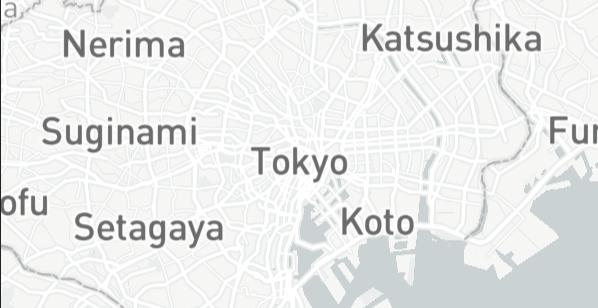

TOKYO
The futuristic metropolis is tapping its ancient feudal roots by investing in street-level livability and resident well-being—in the wake of the Olympics.
POPULATION
METRO: 39,105,00
HIGHLIGHT RANKING


The futuristic metropolis is tapping its ancient feudal roots by investing in street-level livability and resident well-being—in the wake of the Olympics.
POPULATION
METRO: 39,105,00
HIGHLIGHT RANKING
Despite earthquakes, tsunamis and typhoons, Tokyo has long held on to its top spot as one of the safest metropolises on the planet. After dipping amid last year’s scramble to host the 2021 Summer Olympic Games, the city remains incredibly safe, ranking #4 in our Safety subcategory.
Young kids playing and walking to school unattended—a pre-pandemic mind- bender for visitors to the world’s largest city—is a common sight once more after almost three years of lockdowns and intermittent school closures.
Those delayed Olympics went on, of course, despite a tourism ban and local crowds not allowed to watch the live events. Tens of billions spent on infra- structure to welcome the world sat mostly
empty and the 2,000 hotels, inns and guest houses opened around the city will be underwater financially for years, to say nothing of the shopping complexes and other tourist infrastructure.
Despite the pandemic and subsequent derailment of Japan’s plans—or perhaps because of them—the Japanese government remains steadfast, keeping its target of 60 million visitors and $136 billion in tourism revenue by 2030. It’s not as delusional as it sounds: the country enjoyed record tourism for seven straight years and can now accommodate even more visitors to Tokyo, with the expansion of the international terminal at Haneda, the city’s main airport (ranked #65 globally).
The global reverence for the city has returned with international travel.
It earned the #1 spot in Shopping for its world-class experiences, like Ginza’s luxury department stores, newly enhanced with the art-bedecked and sharply designed Ginza Six shopping center.
The newly renovated Miyashita Park boasts 90 boutique shops and restaurants, plus a new hotel with a view of the famed Shibuya district, complete with volleyball courts and a skatepark sprawling over 2.5 acres. Last year the city unveiled the planet’s first Netflix store. Earlier this year, two pop-up stores dedicated to the Netflix show Stranger Things added to the fun.
New openings will ensure retail domination for the foreseeable future, like Kameido Clock near Kameido Station, home to 139 commercial tenants, including Tsutaya Books and Uniqlo, as well as green spaces for families. Mikan Shimokita in the Shimokitazawa neighborhood is a just-opened shopping and restaurant complex where shopping is upstaged by cuisine spanning Chinese, Vietnamese, Korean, Italian and fusion.
Appropriately, Tokyo boasts the second-highest number of restaurants of any city—topping our Restaurant category—and is moving far beyond its internationally beloved food traditions. The metropolis is home to approximately 100,000 restaurants, so visitors and residents alike could never hope to experience a fraction of them. But should you wish to, there are plenty of places to stay.
Tokyo means "eastern capital." Edo has been Japan's largest city since the 17 century. Tokyo's population exceeded one million in the late 19th century, and as Japan's political, economic, and cultural center it become one of the world's most populous cities in the 20th century
The site of Tokyo has been inhabited since ancient times; the small fishing village of Edo existed there for centuries. Edo's development into a city did not occur until "Tokugawa Period" 1603-1867), when it vecame the capital of the Tokugawa shogunate. During this period, however, the imperial family remained in Kyōto, the ancient imperial capital. With the Meiji Restoration of 1868, which ended the shogunate, the capital was moved to Edo. The city was renamed Tokyo, meaning "eastern capital."
The Hen na Hotel in Tokyo Ginza is the world’s first and only hotel run by a robot. Ideal for antisocial travellers who prefer to avoid human contact at the end of a long day of sightseeing, multi-lingual robots staff the hotel. They can turn their heads, blink and carry luggage. “Henn” means “to change,” which represents the hotel’s commitment “for evolution in striving for the extraordinary sensation and comfort that lies beyond the ordinary.” There’s also keyless locking and entry through facial recognition and free WiFI.Tokyo is also home to a robot restaurant. In Shinjuku, you can visit the Robot Restaurant to see robot monsters, dancers and lasers perform as you snack on bento boxes.
Authorities installed blue lights at train stations in a bid to prevent suicides. In 2013, a scientific paper revealed that they were working, the suicides fell to around 84%. The blue light thought to bring people experiencing psychological stress to a state of relaxation more quickly. THIS IS GREAT! but now what is left is Japan to fix their education and workplace system that accomdates their employees and students with ut most care instead of pressuring them too much. Just saying but overall an improvement nevertheless.
Hamburgers? Easy. Umbrellas? No problem. Fish broth? Check the vending machine. Tokyo is the vending machine capital in the world. There’s one at least every 12 metres in Tokyo, with an average of one vending machine per 23 people. Some of the most fascinating vending machines include the Natto Kobo Sendaiya that dispenses natto (fermented soybeans), a banana vending machine and a ‘mystery vending machine’ which, as the name suggests, distributes a ‘mystery’ object wrapped in white paper.
Tokyo has held onto its title for more than a decade. The city boasts the most Michel stars in the world, with 212 Michelin starred restaurants in total. There are 14 three-star, 42 two-star and 223 one-star restaurants. Kanda, Quintessence, and Joël Robuchon are three of the most famous three-star restaurants in the world.
One of Tokyo’s tallest freestanding towers, the Tokyo Tower, is inspired by the Eiffel Tower. Built in 1958, it soars 90 m (295 ft) high, making it taller than the Eiffel Tower itself. Authorities re-painted the structure orange and white to adhere to air regulation. The tower holds the master control over the Tokyo metropolitan area, broadcasting television signals, FM radio reception and transmission, traffic information transmission, as well as weather and air pollution data collection.
With more than 38 million people living in Greater Tokyo, it’s the most populated urban area in the world. There’s no shortage of people here, and it’s also one of the cities with the highest density worldwide. Despite that, Tokyo is very organized, and in some areas, you’ll even walk around on your own from time to time.
The Crime-rate is very low and most crimes in larger cities around the world, are almost unheard of here. It’s so safe in Tokyo that the locals fall asleep on the trains, with their new iPhone visible to everyone.
Purchases that have a total amount of 5000 yen or more are qualified for a tax refund. Foreigners who want to enjoy tax-free shopping need to present their passport when making the purchase.